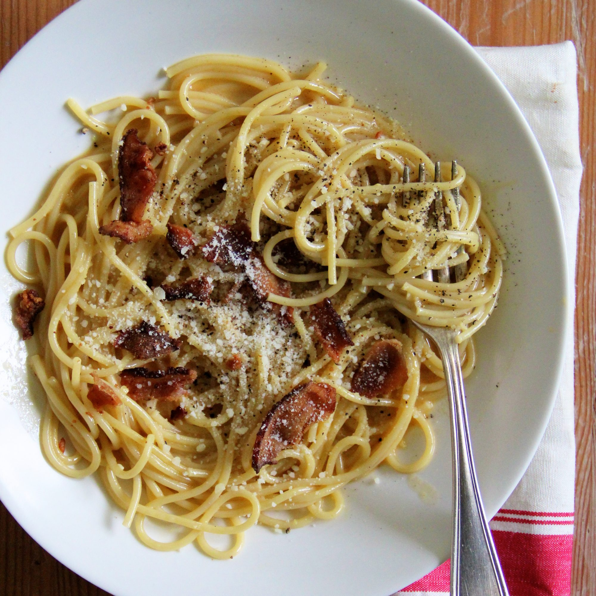
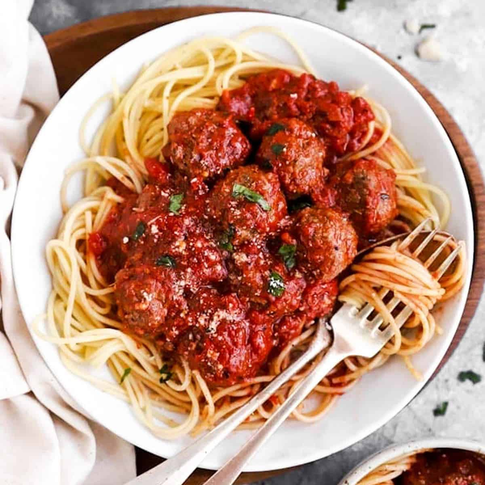

Snacks:
Carbonara
Carbonara is an Italian pasta dish from Romemade with eggs, hard cheese, cured pork, and black pepper. The dish arrived at its modern form, with its current name, in the middle of the 20th century. The cheese is usually Pecorino Romano, Parmigiano-Reggiano, or a combination of the two. Spaghetti pasta is the most common pasta, but fettuccine, rigatoni, linguine, or bucatini are also used. Normally guanciale or pancetta are used for the meat component,but lardons of smoked bacon are a common substitute outside Italy.
Spaghetti Bolognese
Spaghetti bolognese is an Italian pasta dish from Bologna. It consists of spaghetti (long strings of pasta) with an Italian ragù (meat sauce) made with minced beef, pancetta and tomatoes, served with Parmesan cheese. Spaghetti bolognese is one of the most popular pasta dishes eaten outside of Italy.
Pesto Pasta

Pesto Pasta or pesto alla genovese is a sauce originating in Genoa, the capital city of Liguria, Italy. It traditionally consists of crushed garlic, European pine nuts, coarse salt, basil leaves, and hard cheese such as Parmigiano-Reggiano (also known as Parmesan cheese) or Pecorino Sardo (cheese made from sheep's milk), all blended with olive oil.